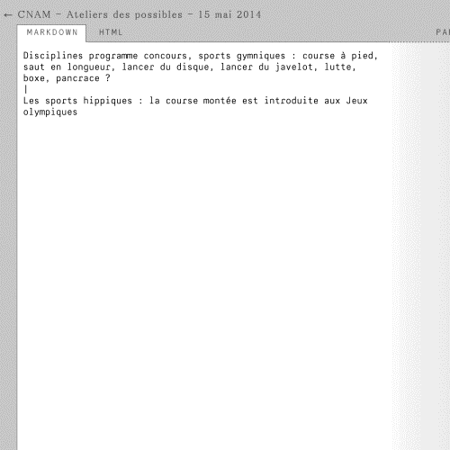
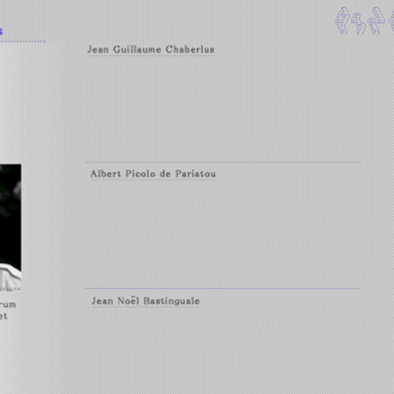
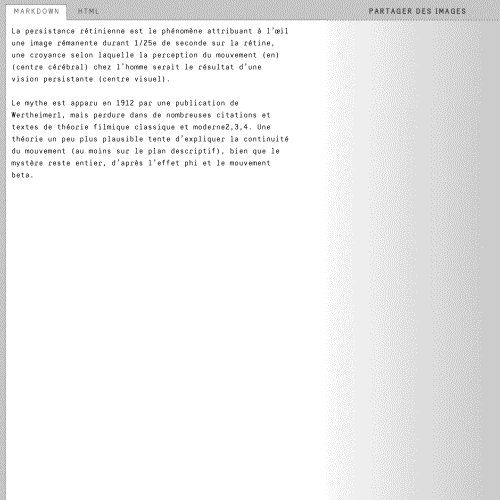
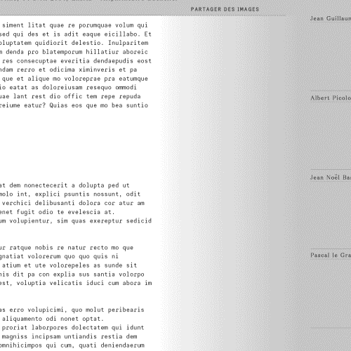
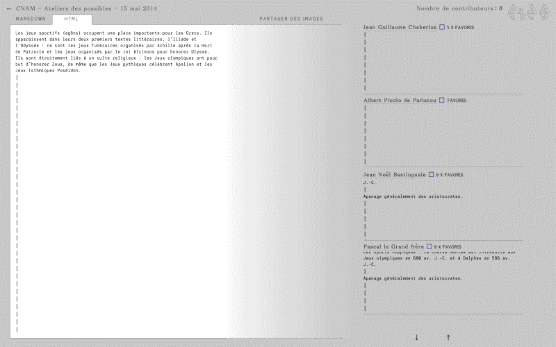

PARTAGER DES IMAGES
- 
Rajouter des abréviations
Il est possible de rajouter des abréviations à la volée, simplement en sélection le mot pour lequel on veut créer un raccourci.
- 
-
Réogarnisation automatique
des visualisateurs
Les visualisateurs se réorganisent automatiquement en mettant le contributeur le plus actif en haut de la pile.

-
Copier - Coller
distinction de l'auteur
Lors d'un copier coller depuis un visualisateur, le copier coller est signifié et l'auteur est indiqué.
- 
-
Liens URL
Lorsque qu'une URL est ajouter dans le pad personnel, elle s'ajoute automatiquement dans la zone commune.
- 
-
Ajout et déplacement des images
Les images se positionnent au même niveau que le curseur situer dans le pad perso.
Il est également possible de déplacer l'image par un drag and drop.
- 
-
Synchronisation des scrolls et des curseurs
Lors de la reprise de la prise de notes, le scroll du pad personnel est synchronisé avec ceux des visualisateurs.
Chaque ligne de texte possède un timecode, les curseurs viennent se positionner au même timecode dans le pad personnel et dans les visualisateurs.